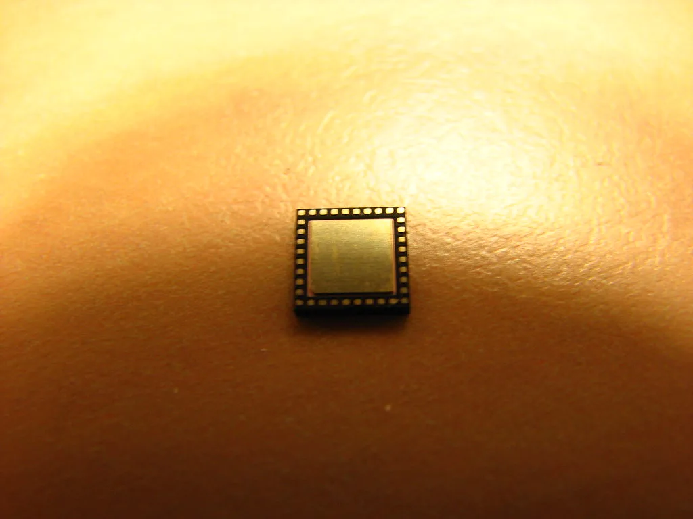
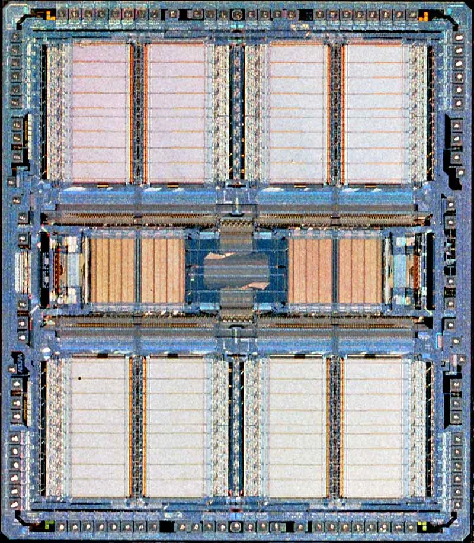

9월 수출 1209억달러 '역대 최대'…반도체 첫 600억달러 돌파
산업통상부가 1일 발표한 수출입 동향에 따르면 9월 수출액은 1209억4000만달러로 전년 동월 대비 83.5% 증가해 월간 기준 역대 최고치를 새로 썼다. 특히 반도체 수출이 603억달러를 기록하며 단일 품목으로는 사상 처음 600억달러 선을 넘어섰다는 점이 눈길을 끈다. 월간 수출 증가율이 80%를 넘어선 것은 통계 작성 이래 보기 드문 사례로, 반도체 업황 회복이 전체 수출 실적을 견인하는 구조가 한층 뚜렷해졌다는 평가가 나온다.
반도체 수출은 전년 동월보다 262.8% 급증했다. 종전 최고 기록이었던 지난 8월의 466억5000만달러를 한 달 만에 다시 갈아치운 것으로, 두 달 연속 자체 최고 기록을 경신한 셈이다. 인공지능(AI) 서버 투자 경쟁이 이어지면서 고대역폭메모리(HBM)를 비롯한 메모리 반도체 수요가 공급을 웃도는 상황이 지속된 영향으로 풀이된다. 글로벌 하이퍼스케일러들이 데이터센터 증설을 위해 장기공급계약 물량을 선제적으로 확보하려는 움직임을 보이면서, 국내 반도체 업체들의 가격 협상력도 한층 강화된 것으로 전해진다.

수입은 710억9000만달러로 전년 동월보다 26.0% 늘었다. 이에 따라 무역수지는 498억5000만달러 흑자를 기록해 월간 기준 역대 최대 규모의 흑자를 냈다. 수출 증가폭이 수입 증가폭을 크게 앞서면서 무역수지 개선에도 속도가 붙은 것으로 분석된다. 에너지 등 원자재 수입 부담이 여전한 가운데서도 반도체를 중심으로 한 수출 호조가 무역수지 흑자 폭을 키운 핵심 변수로 작용했다.
누적 수출 실적도 이번 발표의 주요 포인트다. 1~9월 누적 수출액은 8145억달러로 지난해 같은 기간보다 56.8% 증가하며, 1~9월 기준으로는 처음으로 8000억달러를 넘어섰다. 9개월 만에 8000억달러를 돌파한 것은 역대 가장 빠른 속도라는 평가가 나온다. 반도체 수출이 본격적으로 살아나기 전까지는 통상 환경 악화로 수출 전망이 어둡다는 평가가 많았던 터라, 이번 실적 반전의 폭이 더욱 두드러진다는 분석도 나온다.

이런 흐름이 이어지면 연간 수출 1조달러 고지도 예년보다 이른 시점에 도달할 수 있다는 관측이 나온다. 업계에서는 이르면 11월 중 연간 누적 수출이 1조달러를 넘어설 수 있다는 전망도 제기되는데, 이 경우 역대 최단 기간에 1조달러를 달성하는 기록이 될 전망이다. 산업통상부는 남은 기간에도 반도체와 함께 자동차, 조선 등 주력 업종의 수출 여건을 점검하며 연간 목표 달성을 뒷받침하겠다는 입장이다.
다만 이번 호실적이 반도체 한 품목에 크게 의존하고 있다는 점은 경계해야 할 대목으로 꼽힌다. 메모리 가격의 상승 흐름이 영구적이지 않은 만큼, 글로벌 공급 과잉이나 수요 둔화 국면이 찾아올 경우 수출 지표 전반이 급격히 흔들릴 수 있다는 우려가 상존한다. 반도체를 제외한 다른 주력 품목의 수출 경쟁력을 함께 끌어올려야 한다는 지적도 나온다. 전문가들 사이에서는 특정 품목에 대한 편중도가 높아질수록 대외 충격에 대한 경제 전반의 민감도도 함께 커질 수 있다는 점을 염두에 둬야 한다는 조언이 나온다.
정부는 이번 실적을 토대로 반도체를 비롯한 첨단산업 분야 투자와 수출 지원을 이어갈 계획이라고 밝혔다. 다만 글로벌 경기 둔화와 통상 환경 변화 등 대외 변수가 여전히 많은 만큼, 4분기 이후에도 수출 호조가 이어질지는 좀 더 지켜봐야 한다는 신중론도 함께 제기된다.